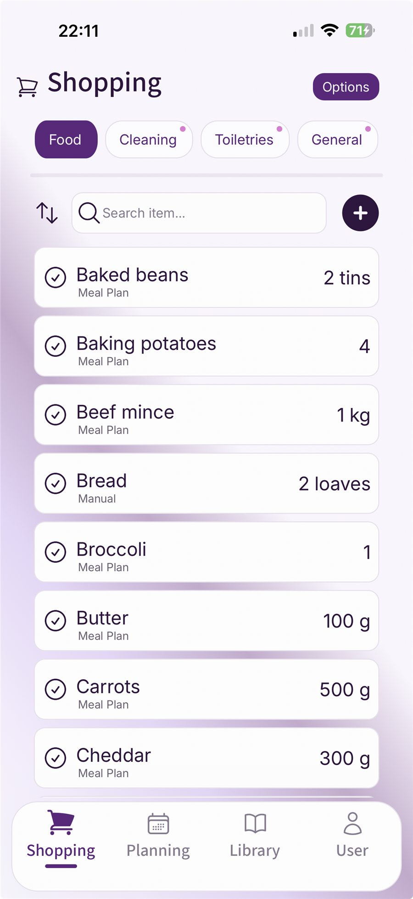

A meal plan only saves time if it becomes a useful shopping list. Otherwise you still end up walking around the supermarket trying to remember whether the curry needed yoghurt, whether there is rice at home, and why you bought two bags of carrots last week. The simplest system is to turn each meal into ingredients, combine duplicate items, check what you already have, then add the household extras that never belong to one recipe. That gives you a list that matches the week, not a hopeful guess.
Build the food shop from the plan.
Fameally turns planned meals into an organised shopping list and keeps food, cleaning, toiletry, and general items separate.
Start with the meals, not the aisles
A shopping list gets messy when it starts with supermarket sections: fruit, meat, tins, frozen, cleaning. That seems organised, but it often hides the real question: what are you actually cooking?
Start by writing the meals down in one place. If you have not planned the week yet, use the earlier Fameally guide on making a weekly meal plan that survives a normal UK week first. Once the meals exist, the shopping list has a job to do. It needs to gather the ingredients for those meals, remove the guesswork, and leave space for the non-meal things your household still needs.
Write every planned meal in one list
Include dinners first, then add breakfasts, lunches, packed-lunch items, snacks, or weekend meals only if you shop for them as part of the same food shop.
Break each meal into ingredients
Do not rely on the meal name. "Chicken curry" becomes chicken, curry paste, coconut milk, rice, spinach, onions, and anything else your version actually needs.
Combine items before you shop
If two meals need rice, onions, carrots, pasta, cheese, or chicken, the list should show the total you need, not two separate reminders that make sense only while you are still at the kitchen table.
Write ingredients the way you buy them
A good shopping list uses supermarket language, not recipe language. "A little cheese" might be enough when you are cooking, but it is not enough when you are trying to decide whether one block of cheddar will cover jacket potatoes, pasta bake, and lunches.
Write quantities and units where they matter. For a UK food shop, that might mean 500g beef mince, 1kg potatoes, 300g rice, 1 pack wraps, 2 tins baked beans, 1 jar passata, 1 bunch bananas, or 1 loaf bread. Exactness matters most for things you can accidentally under-buy or over-buy. If you are relaxed about salad or fruit, a simpler note is fine.
Also be honest about what counts as an ingredient. If your curry always needs yoghurt on the side, put yoghurt on the list. If fajitas are not fajitas in your house without salsa, write it down. The point is not to create a perfect recipe database. The point is to stop remembering the same small details in the middle of the shop.
Combine duplicates carefully
Combining duplicates is where a meal plan becomes a useful food shop. Two meals might both need onions. Three meals might need cheese. Curry and chilli might both need rice. If those stay as separate notes, you can still end up buying too little, too much, or the wrong thing.
Combine by item and unit. If one meal needs 300g rice and another needs 250g rice, your list should say 550g rice. If one meal needs 1 pack wraps and another needs 1 pack pitta breads, those are not duplicates. If one recipe says "1 onion" and another says "2 onions", that can become 3 onions.
This is also a useful moment to round for real buying. You may not buy exactly 550g rice if the supermarket sells 1kg bags, but the combined number tells you whether the bag in the cupboard is enough.
Use this template: meal plan to shopping list
Copy this structure into a note, print it, or use it as a checklist before your main food shop.
- Meals this week: Write the meals you are definitely shopping for.
- Ingredients by meal: List what each meal needs, including quantities where useful.
- Combined food list: Merge duplicate ingredients by item and unit.
- Kitchen check: Cross off what you already have in the fridge, freezer, and cupboards.
- Regular food extras: Add bread, milk, cereal, fruit, packed-lunch items, snacks, tea, coffee, and pet food.
- Household extras: Add cleaning, toiletry, and general items separately so they are not lost among meal ingredients.
- Final scan: Check quantities, remove duplicates, and group the list in the order you shop.
Check what you already have
The quickest way to make the shop cheaper and less wasteful is to check the kitchen before you buy. This does not need a full inventory. A two-minute scan is enough to catch the obvious duplicates: rice, pasta, flour, wraps, tins, jars, frozen vegetables, cheese, condiments, and the half-used pack at the back of the fridge.
Check in the order food disappears from memory: fridge first, freezer second, cupboards third. The fridge catches things that need using. The freezer catches backup meals and frozen vegetables. The cupboards catch the "I think we have that" items that often become accidental doubles.
If you already have enough rice for Monday's curry, remove rice from the list. If you have one tin of beans but need two for jacket potatoes, change the list to one tin. Small corrections like that are what make the final shop feel connected to the actual week.
Add the items that do not belong to a meal
A recipe-based list will still miss things that keep the house running. Bread, milk, cereal, packed-lunch snacks, fruit, washing tablets, washing-up liquid, toothpaste, shampoo, bin bags, kitchen roll, and pet food often do not belong to one dinner. They still need to be on the shop.
Keep those items in their own section. It stops them being buried under recipe ingredients, and it makes the final check easier. If the food list is generated from meals, the household extras are the part you add from habit, stock levels, or a reusable regulars list.
Turn planned meals into a clear list.
Fameally keeps meal ingredients and household list items organised, so the food shop is based on the plan rather than memory.
Where Fameally fits into this routine

Fameally is built around the practical path from meal plan to shop. You create meals with ingredients, add those meals to the week, and let the app build the food list from the ingredients in the plan. Matching food items and units can be counted together, so repeated ingredients are easier to spot before you reach the supermarket.
The rest of the shop can live alongside it. Cleaning, toiletry, and general items stay separate from meal ingredients, and regular household items can be added quickly when they are part of your weekly routine.
Organise the list for the way you shop
The final list should be easy to scan in a real supermarket, not just tidy on paper. Some people like aisle order. Some prefer simple sections: fruit and veg, meat and fish, dairy, bakery, tins and jars, frozen, household. Either is fine if it stops you doubling back.
Keep meal ingredients and household extras visible as separate groups until the final scan. That makes it easier to see whether the week's food is covered and whether the non-food items are complete. A good list should answer two questions quickly: can we cook the meals we planned, and have we remembered the regular things the house needs?
FAQ
- How do I make a shopping list from a meal plan?
- Write the meals down, list the ingredients for each meal, combine duplicate items, check what you already have, then add regular household extras. The result is a list based on the actual week.
- Should I organise a food shopping list by meal or by aisle?
- Start by meal so you do not miss ingredients. Once the list is complete, group it by supermarket section or aisle so it is easier to use while shopping.
- How do I avoid buying duplicate ingredients?
- Combine ingredients before you shop and check the kitchen. If two meals need onions, rice, cheese, or chicken, total them first, then subtract what you already have.
- What household items should I add after meal ingredients?
- Add regular food and non-food items such as bread, milk, cereal, fruit, packed-lunch snacks, washing tablets, toothpaste, shampoo, bin bags, kitchen roll, and pet food.
- Is a shopping list app better than a notes app for meals?
- A notes app can work for a simple list. A meal planning app is more useful when you want ingredients to come from planned meals, repeated items to be easier to manage, and household categories to stay organised.
Related Fameally links
These guides cover the planning work around the food shop: building a realistic week, repeating family planning, and remembering regular household items.
Plan the week in Fameally.
Download Fameally to plan meals, generate the food shop, and keep household list items together.